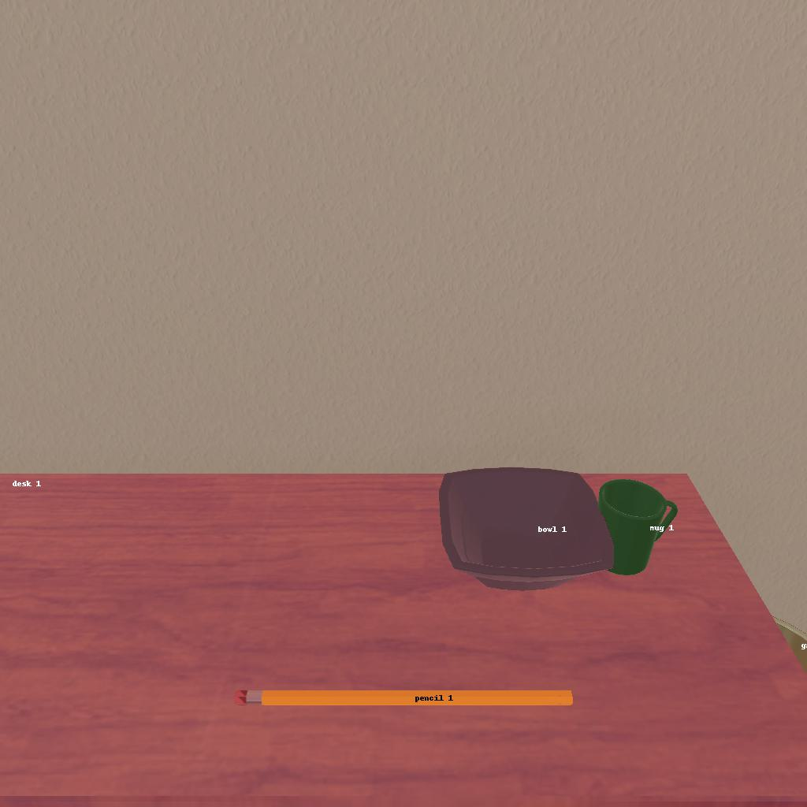

---------------------------------------------------------task: 2---------------------------------------------------------
--------------------------------------------------------------------------------------------------------------------------------------------------------------------
--------------------------------------------------------------------------------------------------------------------------------------------------------------------
Step:--------------------------------------------------------------------------2-------------------------------------------------------------------------------
----------------------------------------
VLM Prompt:
Image1:
Image2:
**Instruction**
1. Analyze the provided image to identify all visible household objects, focusing on those relevant to the task description "examine the pen with the desklamp."
2. Use the analysis of the image and the task hint "The agent must find an object of the desired type, locate and turn on a light source with the desired object in-hand." to answer the question: what is the most reasonable action in the choices for the task description "examine the pen with the desklamp"?
4. Decide and write the answer using the template: The answer is: (i): , where i is the real number. If there is no desired object in the image, search every place based on **Initial Observation** to find the object. And if no one is exactly correct, choose a similar answer.
**Initial Observation**
You are in the middle of a room. Looking quickly around you, you can see bed (1-2), dresser (1), drawer (1-11), sidetable (1-2), desk (1), garbagecan (1), safe (1)
**Answer Choices**
(1): go to bed 1
(2): go to dresser 1
(3): go to bed 2
(4): go to drawer 1
(5): go to sidetable 1
(6): go to drawer 2
(7): go to sidetable 2
(8): go to drawer 3
(9): go to drawer 4
(10): go to garbagecan 1
(11): go to drawer 5
(12): go to drawer 6
(13): go to drawer 7
(14): go to drawer 8
(15): go to drawer 9
(16): go to drawer 10
(17): go to drawer 11
(18): go to safe 1
(19): put pencil 1 in/on desk 1
(20): examine pencil 1
(21): examine desk 1
**Answer**
Let's think step by step by following the instructions.
----------------------------------------
----------------------------------------
Original Response:
The task description is "examine the pen with the desklamp." From the initial observation, we know that there is a desk in the room, and from the images provided, we can see that there is a pencil labeled "pencil 1" on the desk, but no visible desklamp. Since the task requires examining the pen with the desklamp, we must search for a desklamp or a similar light source.
The answer choices provided do not mention a desklamp or any light source, so we must assume that we need to search for it in the places listed in the initial observation. Since the desk is already visible in the image, and it has the pencil (which could be referred to as a pen in the task description), the next logical step would be to search the other places in the room for a desklamp.
The answer is: (1): go to bed 1. This choice is a starting point to begin searching the room systematically for the desklamp, which is not visible in the images provided. If the desklamp is not found at bed 1, we would continue with the other options in the list until the desklamp is found to complete the task of examining the pencil with the desklamp.
----------------------------------------
----------------------------------------
>>> Refine Original VLM Response and Get Pure Action: go to bed 1
----------------------------------------
-----------------------------------------------------------------
Running time: 10.777199268341064 seconds
Total Money: 0.6776200000000001
-----------------------------------------------------------------
-----------------------------------------------------------------
Text Observation:You arrive at loc 0. On the bed 1, you see nothing.
-----------------------------------------------------------------
UNSUCCEED